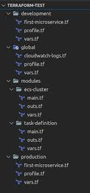

In the realm of Etheria, where magic and technology intertwined, a legendary video game known as "Astral Odyssey" captured the imagination of players far and wide. The game's lore spoke of an ancient artifact, the Astral Shard, hidden within the virtual landscapes of Etheria.
Enter our hero, a skilled gamer named Alex. With a passion for exploration and a knack for solving virtual mysteries, Alex embarked on the ultimate quest to find the elusive Astral Shard. Armed with a virtual sword and a trusty companion, a digital dragon named Byte, Alex delved into the immersive realms of Etheria.
The journey was not without challenges. From battling mythical creatures to solving intricate puzzles, Alex faced each obstacle with determination. Along the way, fellow gamers joined forces, forming a guild known as the "Shard Seekers." Together, they shared strategies, uncovered hidden secrets, and forged alliances to conquer the game's most formidable dungeons.
As the Shard Seekers progressed, whispers of a rival guild, the "Shadow Serpents," reached their ears. Led by the enigmatic player known as Eclipse, the Shadow Serpents sought to claim the Astral Shard for their own nefarious purposes. A virtual war ensued, with epic battles and strategic maneuvers that kept players on the edge of their seats.
Finally, after months of exploration and countless virtual battles, the Shard Seekers stood before the legendary Astral Citadel. The final showdown with Eclipse and the Shadow Serpents awaited. The fate of Etheria hung in the balance.
In a climactic duel, Alex faced Eclipse in an epic battle of skill and strategy. The virtual world shook as swords clashed, spells were cast, and dragons soared through the pixelated skies. In the end, with a well-timed move and a burst of virtual light, Alex emerged victorious.
The Astral Shard, a shimmering gem of untold power, materialized before the Shard Seekers. As they reached out to claim their hard-earned prize, a message echoed through the game:
"Congratulations, brave adventurers. You have completed the Quest for Astral Shards. Until the next great adventure awaits in the world of Etheria."
And with that, the virtual landscapes of Etheria faded away, leaving behind a community of gamers who had shared an unforgettable journey in the realms of pixels and imagination.